一句话总结:DoReMi 用一个小 proxy 模型(280M)在域间跑 Group DRO 最小化"相对参考模型的最差域 excess loss",得到一组域权重 $\bar\alpha$,再用这组权重重采样数据训练大 30 倍的主模型(8B)——在 The Pile 上把所有 22 个域的 perplexity 都降下来,平均 one-shot 下游准确率 +6.5%,达到 baseline 准确率快 2.6×,而调权的额外算力只占主模型的 8%。
🎯 面试考点(高频):
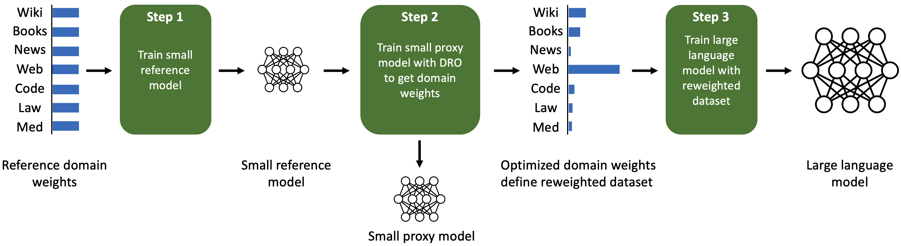
① 图说明:DoReMi 的"门面图",三步流水线。Step 1:用 reference 域权重(均匀或按 token 数)训一个小 reference 模型(图左侧条形分布);Step 2:用 DRO 训一个同样小的 proxy 模型,但抛弃这个 proxy 模型本身、只留下训练过程中的域权重(图中变化后的条形:web 域突然变高);Step 3:用这组优化后的域权重重采样,训练大模型。
② 关键数据 / 对照:左中条形 = reference 域权重(各域大致均匀);右中条形 = DoReMi 优化后,Web/Pile-CC 显著被加权,其它域被压低。Step 1 和 Step 2 用的都是小模型(280M);只有 Step 3 是大模型(8B,30× 大)。注意 proxy 模型最后是被扔掉的——这是论文的关键 framing:DoReMi 是个"调权器",不是"训模型"。
③ 启示:把 DRO 用错地方很关键——DRO-LM(Oren 2019)用 DRO 训出 robust LM,但 DoReMi 反过来把 DRO 当作采样器学习算法:DRO 的 inner max 自动告诉你"哪个域 reference 能学、但 proxy 没学好",这就是该多给样本的域。整套 pipeline 只多花约 8% 的算力(两个 280M 训练),但能给 8B 主模型省下 2.6× 的训练步数。
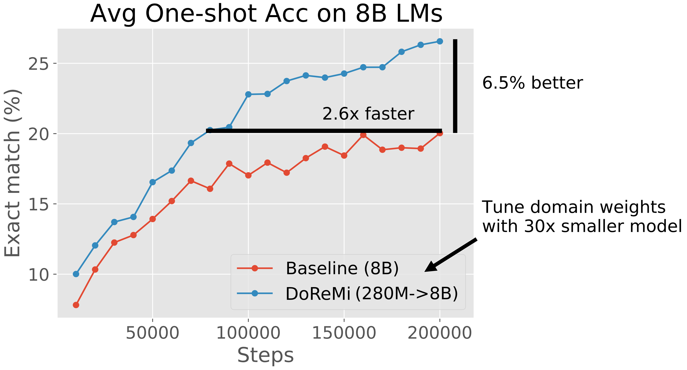
① 图说明:"卖点图":在 The Pile 上、8B 模型的平均 one-shot 下游准确率(5 个生成式任务的 exact-match)随训练步数的曲线。蓝色 = DoReMi (280M→8B);橙色 = Baseline (8B,Pile 默认域权重)。
② 关键数据 / 对照:200k 步时,DoReMi 比 baseline 高 +6.5% 绝对准确率;DoReMi 仅用约 75k 步就达到 baseline 在 200k 步的水平——2.6× 加速。注意调权本身只花 8% 的 FLOPs(两次 280M 训练),所以净收益依然显著。
③ 启示:① 数据 mixture 是一个被严重低估的"免费午餐"——同样的模型、同样的步数、同样的 token 预算,仅仅改变采样比例就有 6.5pt 的下游收益;② 加速比(2.6×)在大模型时代直接等同于钱——8B 模型训 75k vs 200k,差别就是几十万到上百万美元;③ proxy 的尺度只有主模型的 1/30,意味着这个方法对 30B、70B、200B 大模型同样可行——这是 DoReMi 被 Llama-3 / DeepSeek 等开源系列大量复用的根本原因。
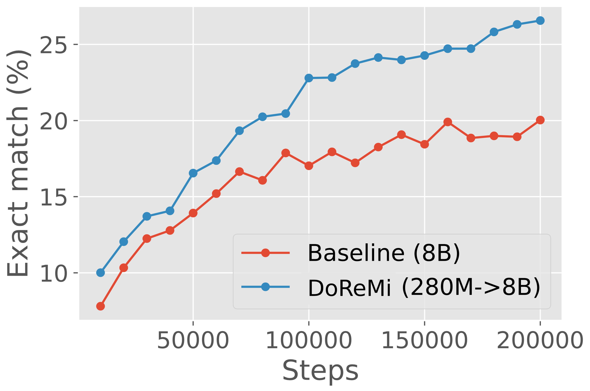
① 图说明:Figure 3 左侧(The Pile)的下游准确率曲线——和 Figure 2 同源,只是 Figure 3 是论文实验主表中的子图,Figure 2 是把同一组数据放大并加箭头注释做"宣传图"。蓝色 DoReMi 持续高于橙色 Baseline。
② 关键数据 / 对照:训练步数 0→200k,DoReMi 从 10% 升到 26.5%、Baseline 从 8% 升到 20%。两条曲线从一开始就有间距且持续拉大:不是后期 reward hacking 式飞跃,而是从 epoch 0 起就在"更好的数据上训练"。
③ 启示:注意纵轴是 exact-match(很严格的指标),从 20→26.5 的提升相当大;这暗示 mixture 不只是影响 perplexity,还影响"涌现"能力——好的 mixture 能让模型更早学会 closed-book QA 这种需要稠密知识的任务。
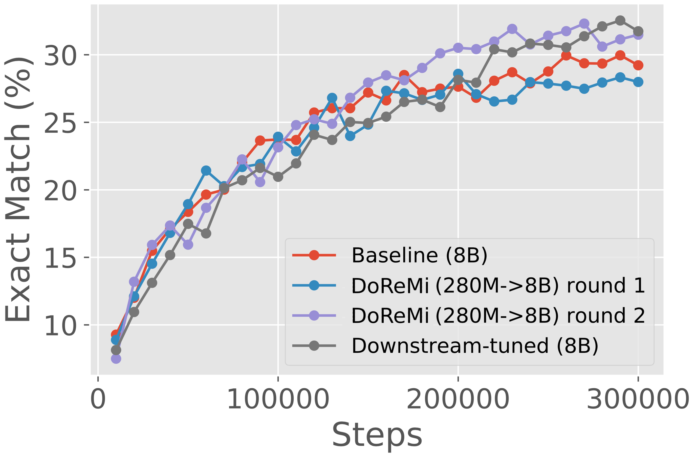
① 图说明:Figure 3 右侧(GLaM 数据集)的对应曲线。共四条:Baseline(均匀域权重,红)、DoReMi round 1(蓝)、DoReMi round 2(紫)、Downstream-tuned oracle(深灰)——这里的 oracle 是用下游评测任务直接调权得到的"作弊上界"。
② 关键数据 / 对照:第 1 轮 DoReMi 仅与 baseline 持平;第 2 轮显著上升、与 downstream-tuned oracle 几乎重合(均在 31~32%)。注意 DoReMi 完全没看过下游任务,却追平了用下游任务调出来的权重。
③ 启示:① iterated DoReMi 必要——一轮不够,要把上一轮的 $\bar\alpha$ 作为下一轮的 $\alpha_\mathrm{ref}$ 来反复 refine;② GLaM 只有 8 个域,比 Pile(22 个)粒度更粗,因此 DoReMi 的相对收益小一些;③ "追平 oracle"是非常强的论点——它说明 worst-case excess loss 这个无监督目标和下游平均准确率有隐式的对齐,这对工业实践极其重要。
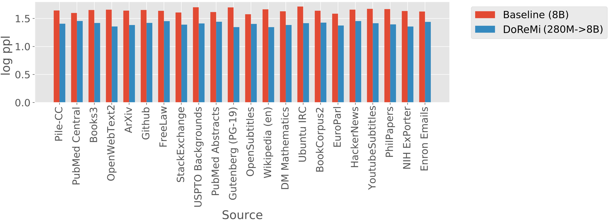
① 图说明:Figure 4:Pile 全 22 个域的 per-domain log-perplexity 条形图。红条 = Baseline (8B),蓝条 = DoReMi (280M→8B)。
② 关键数据 / 对照:22/22 域 DoReMi 蓝条都比红条短(perplexity 更低),即便像 ArXiv / PubMed Central 这些被 DoReMi 大幅下调采样比例的域,perplexity 也下降。这是 paper 最反直觉的结果:"给某些域更少 token,反而学得更好"。
③ 启示:论文给出的解释(Appendix D 的玩具例子+主文章假设)——最低熵域不需要多少样本就学会;最高熵域(随机噪声)和模型随机初始化的均匀输出已经接近,几乎"白给";中等熵域(web/书)才是真正的学习区,把样本挪到那里,通过正向迁移把所有域都拉起来。这与 Chinchilla / scaling laws 的"data quality matters more than quantity"非常吻合。
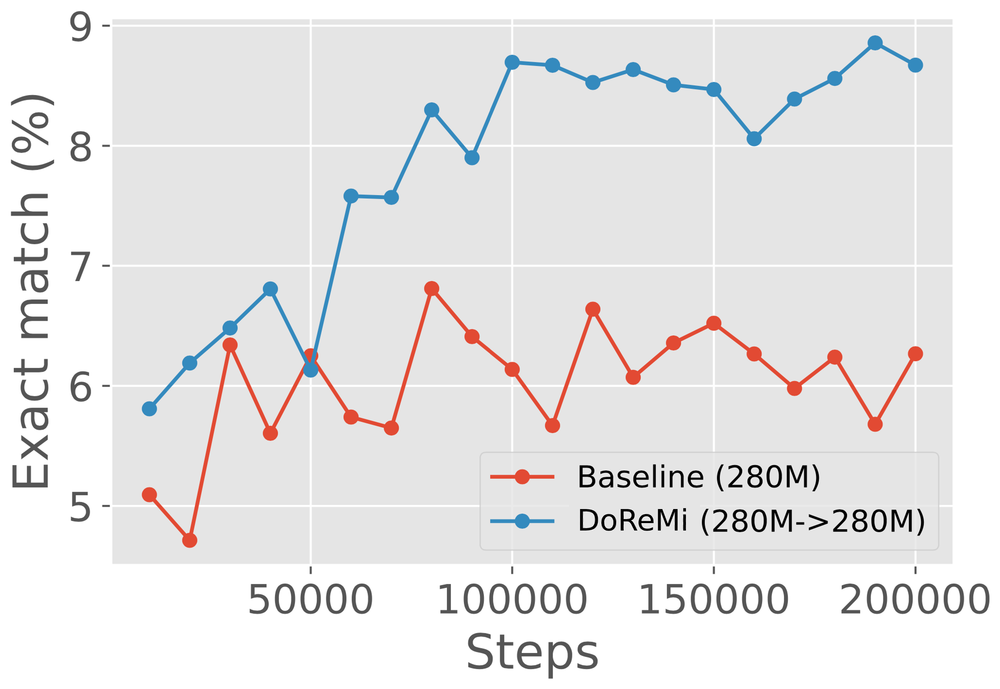
① 图说明:Figure 5 子图之一:在 280M 这一尺度上,proxy 与 main 同尺寸的对照——DoReMi (280M→280M) vs Baseline (280M) 的 one-shot 下游准确率曲线。
② 关键数据 / 对照:200k 步时,DoReMi 约 8.5–9%,Baseline 约 6%——绝对差距 ~2.5pt,相对提升 ~40%。注意这是小模型的曲线,因此基础水平比 8B 低得多。
③ 启示:① DoReMi 的收益不是仅在 8B 这一档才出现,从 280M 起就稳定有 +2~3pt;② "proxy 与 main 同尺寸"是科学对照——排除了"小 proxy 找不到大模型最优 mixture"的疑虑;③ 这种 setting 在生产实践中不直接省算力(因为 proxy 已经和 main 一样大了),但是验证算法本身正确性的关键消融。
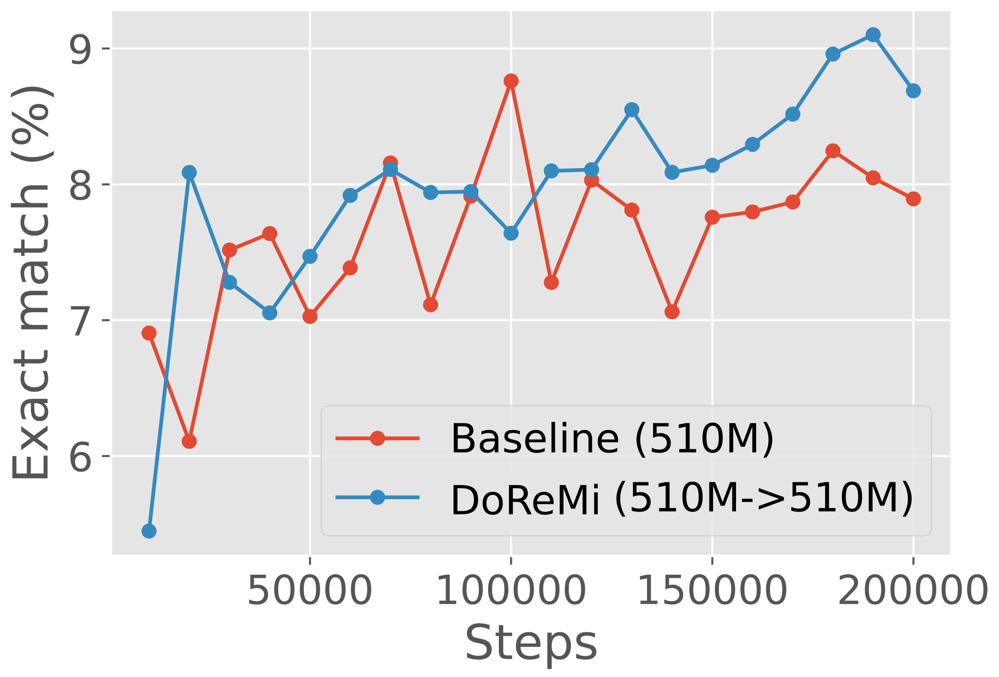
① 图说明:Figure 5 第二个子图:510M 尺度下的 DoReMi vs Baseline。
② 关键数据 / 对照:在 510M 这一档,两条曲线最为接近(~1~2pt 差距),论文也承认 510M 是异常点——其它三档(280M、760M、1B)都有 ~3pt 的稳定提升。可能与某种特定 scaling regime 的优化扰动有关。
③ 启示:科研诚信加分项:论文没有藏起这个不那么漂亮的尺度,而是写在主文里。读者从这里也学到:跨尺度方法不会每个 scale 都同样好,但只要 trend 稳健就 ok。
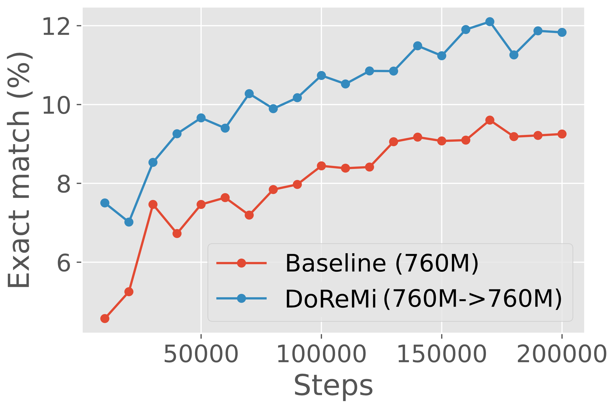
① 图说明:Figure 5 第三个子图:760M 尺度下的曲线对照。
② 关键数据 / 对照:DoReMi 比 Baseline 高 ~3pt,稳定 ~4× 加速达到 baseline 的最终值——与 280M、1B 趋势一致。
③ 启示:"DoReMi 在 4 档尺度上平均给出 4× 加速,且差距随尺度不缩小"——这是论文最关键的可外推性结论,意味着把方法移植到 30B、70B 时收益不会消失。
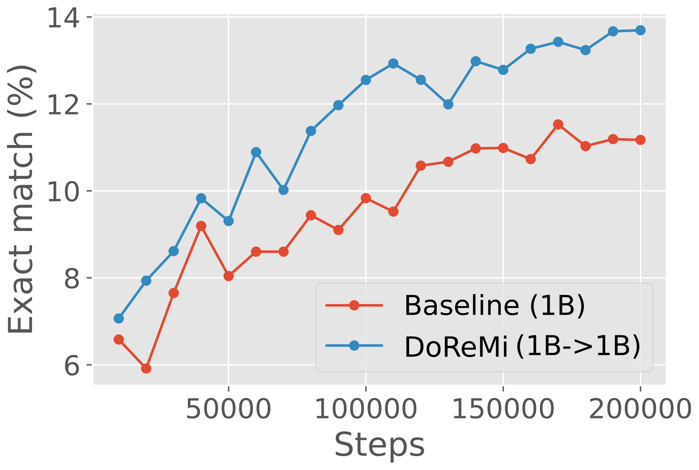
① 图说明:Figure 5 第四个子图:1B 尺度下的对照——也是 "proxy=main=1B" 这一档。
② 关键数据 / 对照:DoReMi 比 Baseline 高 ~3pt,但注意:Table 3b 显示 1B 的 proxy 模型本身比 baseline 1B 模型差(19→0/22 击败 baseline),DoReMi 的 mixture 仍然能让另一个 1B 主模型超过 baseline——也就是说"proxy 学得不好不要紧、它产出的域权重仍然有用"。
③ 启示:这里揭示了一个微妙现象:Group DRO 在 1B 这一规模上对模型本身有点"过分悲观"(把太多概率压在 worst-case 域上),但 averaged α 平均掉了 trajectory 的极端,仍然得到合理 mixture。论文据此猜测resampling-based Group DRO 优化器(而非 reweighting-based)在大 proxy 上会更好——这是后续工作 DoGE / RegMix 的切入点。
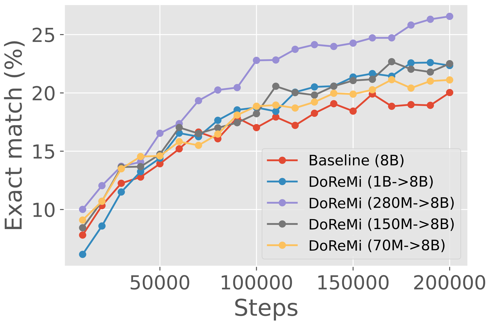
① 图说明:Figure 6 左:固定主模型为 8B,变化 proxy 模型尺度(70M / 150M / 280M / 1B),所有曲线都在 The Pile 上。
② 关键数据 / 对照:排名:DoReMi (280M→8B) 紫线 最高(~26.5%),> DoReMi (1B→8B) 蓝(~22.5%)≈ DoReMi (150M→8B) 灰(~22.5%) > DoReMi (70M→8B) 黄(~21.5%) > Baseline 红(~20%)。
③ 启示:① proxy 大小存在 sweet spot,不是越大越好——这是个反直觉但关键的发现;② 280M 在 70M~1B 范围内是 The Pile 上的最优 proxy 尺度;③ 论文猜想 1B 反而退化是因为 Group DRO 优化器质量随模型变大下降;④ 实践上:不需要花大力气找最佳 proxy,任何 70M~1B 都比 baseline 强,但要小心 1B 这种"看似该更好"的反例。
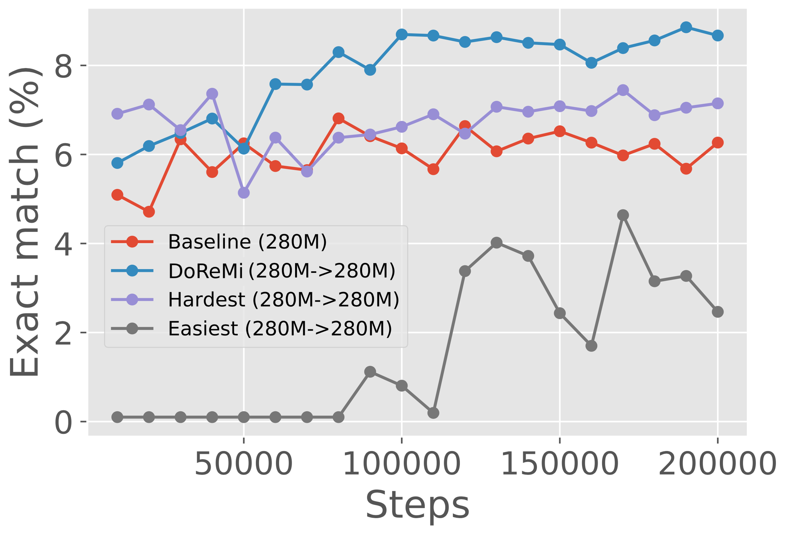
① 图说明:Figure 6 右:目标函数消融——比较"原版 excess loss"vs"只用 proxy loss(选最难域)"vs"只用 $-\ell_\mathrm{ref}$(选最易域)"三种 DRO 目标在 280M→280M 设置下的下游准确率。
② 关键数据 / 对照:DoReMi (原版 excess loss)显著高于 baseline;"hardest" 目标(只优化 proxy loss 高的域)不如 baseline;"easiest"(只优化 reference loss 低的域)大幅劣于 baseline。换言之,两个分量单用都不行,必须取差值。
③ 启示:① $\ell_\theta - \ell_\mathrm{ref}$ 这个"减法"是 DoReMi 的灵魂——它过滤掉了"高熵噪声域"(reference 也学不好,差值不大)和"低熵已学好域"(两者都低,差值不大),只留下"reference 能学、proxy 没学好"这个 learnable 区间;② 这呼应了 RHO-Loss(Mindermann 2022)的"learnable, worth learning, and not yet learnt"哲学;③ 对面试:能解释清楚"为什么 excess loss 比 raw loss 好"是核心考点,直接对应论文 sec 4 ablation。
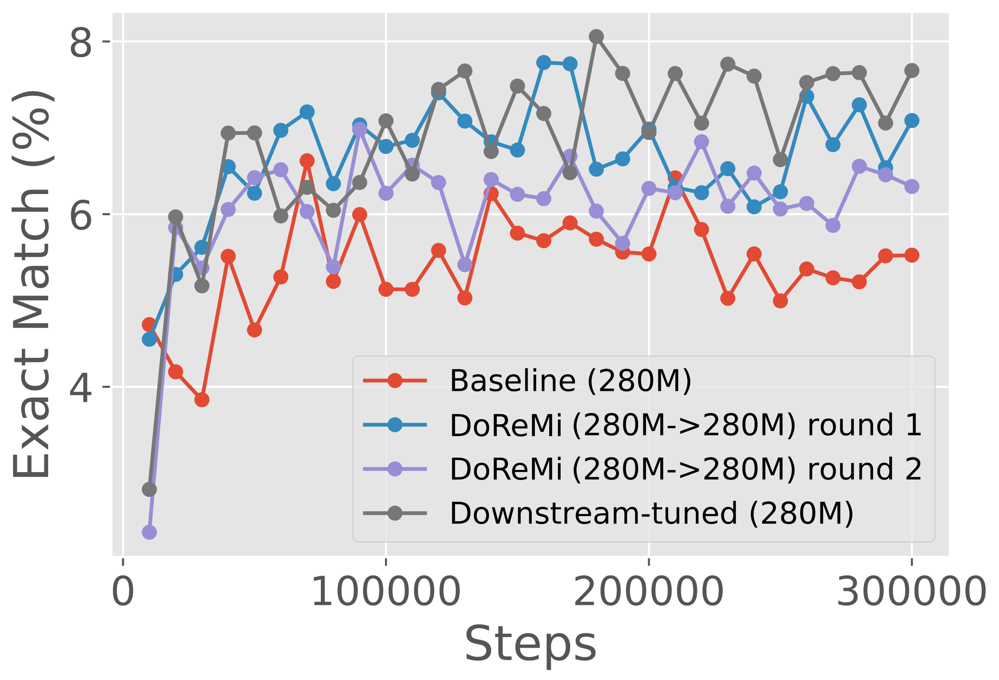
① 图说明:Appendix Figure 7 子图:GLaM 数据集上 280M 尺度的 iterated DoReMi 跨尺度结果。
② 关键数据 / 对照:round-2 DoReMi 在 280M 上反而略低于 round-1,但当用 round-2 权重训 8B 主模型时,效果反而好——说明"在小模型上的最佳 mixture" 不等于 "迁移到大模型时的最佳 mixture",这是个微妙的 transfer 现象。
③ 启示:iterated DoReMi 的收敛条件 $\|\bar\alpha-\alpha_\mathrm{ref}\|_\infty<10^{-3}$ 是工程上有效的简单准则,3 轮就停。在调权预算紧张时,可以只跑 1~2 轮已经获得大部分收益。
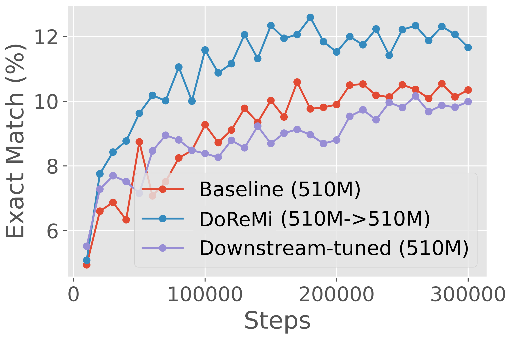
① 图说明:Appendix Figure 7 子图:GLaM 上 510M 尺度的 iterated DoReMi。
② 关键数据 / 对照:DoReMi 与 downstream-tuned oracle 重合或略高,均显著高于均匀 baseline。
③ 启示:跨尺度复现性强——DoReMi 不是 The Pile + 280M 的偶然结果。
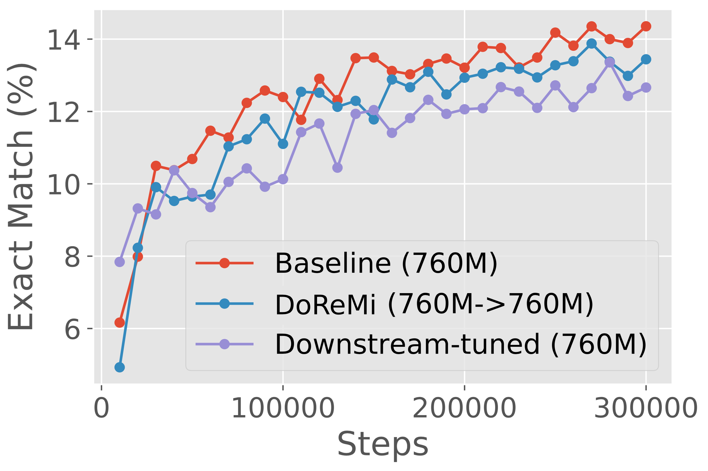
① 图说明:Appendix Figure 7 子图:GLaM 760M 尺度的 iterated DoReMi。
② 关键数据 / 对照:第二轮 DoReMi 与 downstream-tuned oracle 几乎重合,均 ~32%。
③ 启示:对一个完全不看下游任务的算法,能持续追平 oracle,这就是 DoReMi 被实战采用的最强卖点。
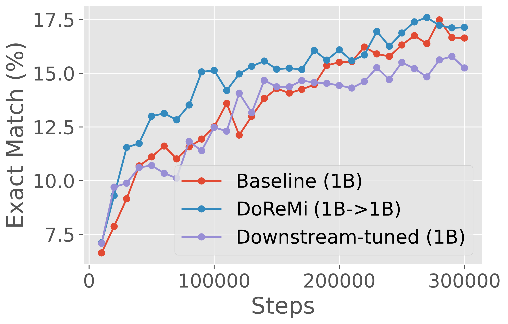
① 图说明:Appendix Figure 7 子图:GLaM 1B 尺度的 iterated DoReMi 曲线。
② 关键数据 / 对照:1B 尺度下 DoReMi round-2 同样追平 downstream-tuned oracle。
③ 启示:从 280M 到 1B 全部 4 个尺度,iterated DoReMi 都能匹配甚至超过"用下游任务调出来"的 oracle ——这对工业界的意义是:你不需要再花钱去训上千个 LM 然后用下游任务选 mixture,DoReMi 一次就够。
DoReMi: Optimizing Data Mixtures Speeds Up Language Model Pretraining. Sang Michael Xie∗1,2, Hieu Pham1, Xuanyi Dong1, Nan Du1, Hanxiao Liu1, Yifeng Lu1, Percy Liang2, Quoc V. Le1, Tengyu Ma2, and Adams Wei Yu1. 1Google DeepMind 2Stanford University.
The mixture proportions of pretraining data domains (e.g., Wikipedia, books, web text) greatly affect language model (LM) performance. In this paper, we propose Domain Reweighting with Minimax Optimization (DoReMi), which first trains a small proxy model using group distributionally robust optimization (Group DRO) over domains to produce domain weights (mixture proportions) without knowledge of downstream tasks. We then resample a dataset with these domain weights and train a larger, full-sized model.
In our experiments, we use DoReMi on a 280M-parameter proxy model to set the domain weights for training an 8B-parameter model (30x larger) more efficiently. On The Pile, DoReMi improves perplexity across all domains, even when it downweights a domain. DoReMi improves average few-shot downstream accuracy by 6.5% points over a baseline model trained using The Pile's default domain weights and reaches the baseline accuracy with 2.6x fewer training steps. On the GLaM dataset, DoReMi, which has no knowledge of downstream tasks, even matches the performance of using domain weights tuned on downstream tasks.
预训练数据各域(例如 Wikipedia、书籍、网页文本)之间的混合比例极大地影响语言模型(LM)的表现。本文提出 Domain Reweighting with Minimax Optimization(DoReMi):先训一个小的 proxy 模型,在各域上用 group distributionally robust optimization(Group DRO)产出一组域权重(混合比例),整个过程无需任何下游任务信息。我们随后用这组域权重对数据集做重采样,训练一个尺寸更大、完整规格的模型。
实验中,我们用 DoReMi 在一个 280M 参数的 proxy 模型上确定域权重,再用它更高效地训练一个 8B 参数的模型(大 30 倍)。在 The Pile 上,DoReMi 改善了所有域上的 perplexity——即便它把某个域下调权重也是如此。相对用 The Pile 默认域权重训出的基线,DoReMi 把平均 few-shot 下游准确率提高了 6.5 个百分点,并且只用 2.6 倍少的训练步数就达到了基线的准确率。在 GLaM 数据集上,完全不看下游任务的 DoReMi 甚至匹敌"用下游任务调出来的域权重"。
Datasets for training language models (LMs) are typically sampled from a mixture of many domains. For example, The Pile, a large publicly available dataset, is composed of 24% web data, 9% Wikipedia, 4% GitHub, etc. The composition of the pretraining data greatly affects the effectiveness of an LM. However, it is unclear how much of each domain to include to produce a model that performs well for a wide variety of downstream tasks. Existing works determine domain weights (the sampling probabilities for each domain) by using intuition or a set of downstream tasks. For example, The Pile uses heuristically-chosen domain weights, which could be suboptimal. On the other hand, existing LMs such as PaLM and GLaM tune the domain weights based on a set of downstream tasks, but requires training potentially thousands of LMs on different domain weights and risks overfitting to the particular set of downstream tasks.
训练语言模型(LM)的数据集通常采样自多个域的混合。例如 The Pile 这个大型公开数据集,由 24% 网页数据、9% Wikipedia、4% GitHub 等构成。预训练数据的组成极大地影响一个 LM 的有效性。然而,要为"在多种下游任务上都表现良好"的模型选择各域应占多少比例,这并不清楚。现有工作通过直觉或一组下游任务来确定域权重(每个域的采样概率)。比如 The Pile 使用启发式选择的域权重,可能并不最优。另一方面,PaLM 和 GLaM 等现有 LM 会基于一组下游任务来调整域权重,但这可能需要训练上千个 LM 来扫描不同权重,而且容易过拟合到那一组特定的下游任务。
Instead of optimizing domain weights based on a set of downstream tasks, our approach aims to find domain weights which lead to models that perform well on all domains by minimizing the worst-case excess loss over domains, following Mindermann et al. (2022), Oren et al. (2019). The excess loss is the loss gap between the model being evaluated and a pretrained reference model. This motivates our algorithm, Domain Reweighting with Minimax Optimization (DoReMi), which leverages distributionally robust optimization (DRO) to tune the domain weights without knowledge of downstream tasks (Figure 1). First, DoReMi trains a small reference model (e.g., 280M parameters) in a standard way. Second, DoReMi trains a small distributionally robust language model (DRO-LM), which minimizes the worst-case excess loss (relative to the reference model's loss) across all domains. Notably, rather than using the robust LM, we take the domain weights produced by DRO training. Finally, we train a large (8B) LM on a new dataset defined by these domain weights.
与按一组下游任务调权不同,我们的方法的目标是:沿用 Mindermann 等(2022)与 Oren 等(2019),通过最小化域上的 worst-case excess loss 来找一组让模型在所有域上都表现良好的域权重。这里的 excess loss(超额损失)指被评估模型与一个预训练 reference 模型之间的损失差距。这一目标导出我们的算法——Domain Reweighting with Minimax Optimization(DoReMi):它利用 distributionally robust optimization(DRO)来调整域权重,而无需下游任务知识(图 1)。首先,DoReMi 用标准方式训一个小的 reference 模型(如 280M 参数)。其次,DoReMi 训一个小的 distributionally robust 语言模型(DRO-LM),它在所有域上最小化"相对 reference 模型损失的 worst-case excess loss"。关键之处:我们并不使用这个 robust LM,而是取它训练过程中产出的域权重。最后,我们用这组域权重定义的新数据集训练一个大 LM(8B)。
Our approach adapts the DRO-LM framework (Oren et al., 2019) to optimize domain weights instead of producing a robust model. To do this, DoReMi uses the online learning-based optimizer from Group DRO, which dynamically updates domain weights according to the loss on each domain for rescaling the training objective, instead of subselecting examples from a minibatch as in Mindermann et al. (2022), Oren et al. (2019). Finally, DoReMi takes the averaged domain weights over DRO training steps.
我们的方法把 DRO-LM 框架(Oren 等 2019)改造成"优化域权重"而非"产出 robust 模型"。为此,DoReMi 采用 Group DRO 中基于在线学习的优化器:它根据每个域上的损失动态更新域权重以对训练目标重新加权;而不是像 Mindermann 等(2022)或 Oren 等(2019)那样从 minibatch 中挑子集。最后,DoReMi 取 DRO 训练过程中域权重的轨迹平均作为最终域权重。
In Section 3, we run DoReMi on 280M proxy and reference models to optimize domain weights on The Pile and the GLaM dataset (used in PaLM). The DoReMi domain weights are used to train an 8B parameter LM (over 30x larger). On The Pile, DoReMi reduces perplexity on all domains over baseline domain weights, even when it downweights a domain. DoReMi improves average downstream accuracy over a baseline model trained on The Pile's default domain weights by 6.5% points on generative few-shot tasks and achieves the baseline downstream accuracy 2.6x faster (Figure 2). In Section 4, we find that DoReMi consistently improves LM training when varying the sizes of the proxy model and the main model trained with optimized domain weights. On the GLaM dataset where domain weights tuned on downstream tasks are available, DoReMi even performs comparably to tuning domain weights on downstream task performance.
在第 3 节,我们用 280M 的 proxy 与 reference 模型,在 The Pile 与 GLaM 数据集(PaLM 使用的)上跑 DoReMi 以优化域权重。DoReMi 产出的域权重被用来训练一个 8B 参数的 LM(大 30 倍以上)。在 The Pile 上,DoReMi 在所有域上都比基线域权重降低了 perplexity——即使某些域被 DoReMi 下调权重也是如此。在生成式 few-shot 任务上,DoReMi 相对用 Pile 默认权重训出的基线把平均下游准确率提高 6.5 个百分点,并以 2.6× 更快的速度达到基线准确率(图 2)。第 4 节中,我们发现:当改变 proxy 模型尺寸和用优化权重训的主模型尺寸时,DoReMi 一致地改善 LM 训练。在 GLaM 数据集上(那里有"用下游任务调出来"的域权重),DoReMi 甚至能持平"按下游任务表现调权"的方法。
Setup. Suppose that we have $k$ domains (e.g., Wikipedia, GitHub), where for each domain $i$, we have a set of examples $D_i$. Domain weights $\alpha \in \Delta_k$ specify a probability distribution over the $k$ domains, and consequently a distribution over the training data:
where $\mathrm{unif}(D) = \frac{1}{|D|}\sum_{x\in D}\delta_x$ is the uniform distribution over the examples in $D$.
DoReMi. The inputs of DoReMi are the data $D_1, \ldots, D_k$, reference domain weights $\alpha_\mathrm{ref}$ (e.g., uniform or based on raw token count of each domain), and training hyperparameters for the large, full-size model (number of training steps $T$ and batch size $b$). DoReMi returns optimized domain weights $\bar\alpha$ and ultimately, a large model trained on $P_{\bar\alpha}$.
Setup. 假设我们有 $k$ 个域(例如 Wikipedia、GitHub),对每个域 $i$ 我们有一个样本集合 $D_i$。域权重 $\alpha\in\Delta_k$ 指定了一个在这 $k$ 个域上的概率分布,从而也指定了训练数据上的分布 $P_\alpha = \sum_{i=1}^k \alpha_i\cdot\mathrm{unif}(D_i)$,其中 $\mathrm{unif}(D) = \frac{1}{|D|}\sum_{x\in D}\delta_x$ 是 $D$ 上的均匀分布。
DoReMi. DoReMi 的输入包括数据 $D_1,\ldots,D_k$、reference 域权重 $\alpha_\mathrm{ref}$(例如均匀分布或按每个域的原始 token 数得到),以及面向大型(full-size)主模型的训练超参(训练步数 $T$、batch size $b$)。DoReMi 输出优化后的域权重 $\bar\alpha$,并最终输出在 $P_{\bar\alpha}$ 上训练得到的大模型。
Step 1: Obtain a small reference model. We first train a model $p_\mathrm{ref}$ on some reference domain weights $\alpha_\mathrm{ref}$ (e.g., based on raw token count as a default) for $T$ steps, batch size $b$. This model serves as the reference model for step 2 and captures a baseline level of difficulty of each example/domain. The reference model can be a relatively small model (280M parameters in our experiments).
Step 2: Train proxy model with Group DRO to obtain domain weights. To obtain domain weights, we train a small proxy model $p_\theta$ in the distributionally robust language modeling (DRO-LM) framework with the Group DRO optimizer, where $\theta$ are the weights of the proxy model. This framework trains a robust model by optimizing the worst-case loss over domains, which is equivalent to the following minimax objective:
where the losses $\ell_\theta(x) = -\log p_\theta(x)$ and $\ell_\mathrm{ref}(x) = -\log p_\mathrm{ref}(x)$ are the negative log-likelihoods of the proxy and reference models respectively, and $|x|$ is the number of tokens in an example $x$. The objective aims to minimize the worst-case excess loss across domains because the inner maximization over $\alpha$ puts all the weight on the domain with the highest excess loss.
Step 1:训一个小的 reference 模型。我们先在某组 reference 域权重 $\alpha_\mathrm{ref}$ 上(例如默认按原始 token 数)以 $T$ 步、batch size $b$ 训练一个模型 $p_\mathrm{ref}$。该模型在 Step 2 中充当 reference,捕捉每个样本/域的"基线难度"。reference 模型可以相对较小(我们实验里用 280M 参数)。
Step 2:用 Group DRO 训 proxy 模型以获得域权重。为获得域权重,我们在 DRO-LM 框架下、用 Group DRO 优化器训一个小的 proxy 模型 $p_\theta$,$\theta$ 是 proxy 模型权重。该框架通过优化域上的 worst-case loss 来训出一个 robust 模型,等价于上式 (1) 的 minimax 目标——其中 $\ell_\theta(x) = -\log p_\theta(x)$、$\ell_\mathrm{ref}(x) = -\log p_\mathrm{ref}(x)$ 分别是 proxy 和 reference 的负对数似然,$|x|$ 是样本 $x$ 的 token 数。该目标的语义是"最小化跨域的 worst-case excess loss"——因为内层对 $\alpha$ 的最大化会把所有权重压在 excess loss 最高的那个域上。
Intuitively, the excess loss $(\ell_\theta(x) - \ell_\mathrm{ref}(x))$ measures the headroom for the proxy model to improve, with respect to the reference model, on example $x$. Examples with higher excess loss are those where the reference model achieves low loss (such that the example is "learnable") but the proxy model still has high loss. Examples with low excess loss may be very high entropy (i.e. optimal loss is high, and thus the reference loss is high) or very low entropy (i.e., easy to learn, and thus the proxy loss is low). The Group DRO optimizer works by interleaving exponentiated gradient ascent updates on domain weights $\alpha_t$ with gradient updates on the proxy model weights $\theta_t$ over training steps $t$. The optimizer updates $\alpha_t$ to upweight domains with high excess loss, which scales up the proxy model's gradient update on examples from these domains. Following Nemirovski et al. (2009), we return the average weights over the training trajectory $\bar\alpha = \frac{1}{T}\sum_{i=1}^{T}\alpha_t$ as the optimized domain weights to use in step 3.
Step 3: Train large model with new domain weights. The tuned domain weights $\bar\alpha$ define a new training distribution $P_{\bar\alpha}$. We resample the data from this new distribution to train a main model (larger than the reference/proxy models), using a standard training procedure.
直观上,excess loss $(\ell_\theta(x) - \ell_\mathrm{ref}(x))$ 度量了"proxy 模型在样本 $x$ 上相对 reference 还能改进多少 headroom"。excess loss 高的样本是:reference 损失低(说明样本是可学的),但 proxy 损失仍高。excess loss 低的样本可能是:极高熵(最优损失就高,所以 reference 损失也高),或者极低熵(很容易学,所以 proxy 损失低)。Group DRO 优化器的工作方式是在训练步 $t$ 上交替进行:对域权重 $\alpha_t$ 做指数化梯度上升更新,对 proxy 模型权重 $\theta_t$ 做梯度更新。优化器把 $\alpha_t$ 提高于 excess loss 高的域,这又放大 proxy 模型在这些域样本上的梯度更新。沿 Nemirovski 等(2009),我们返回训练轨迹上的平均权重 $\bar\alpha = \frac{1}{T}\sum_{i=1}^T\alpha_t$ 作为 Step 3 用的优化权重。
Step 3:用新域权重训大模型。调好的域权重 $\bar\alpha$ 定义了一个新的训练分布 $P_{\bar\alpha}$。我们从这个新分布重采样数据,以标准训练流程训练一个比 reference/proxy 都更大的主模型。
Details for Step 2 (Algorithm 1). The main structure of Algorithm 1 is a training loop which updates the proxy model over $T$ steps. At each step, we follow Sagawa et al. (2020) and sample a minibatch with uniform domain weights (regardless of the reference domain weights $\alpha_\mathrm{ref}$, which only affects the reference model). We then compute the per-domain excess losses, normalized by the total number of tokens in each domain, and use them to update the domain weights $\alpha_t$ at each step. We first compute the per-domain excess loss at a per-token level and then aggregate, where the token-level losses at index $j$ are $\ell_{\theta_{t-1},j}(x) = -\log p_{\theta_{t-1}}(x_j \mid x_1,\ldots,x_{j-1})$ and $\ell_{\mathrm{ref},j}(x) = -\log p_\mathrm{ref}(x_j \mid x_1,\ldots,x_{j-1})$. Since the Group DRO optimizer requires a non-negative loss, we clip the per-token excess loss at 0. Finally, we update the proxy model for the objective $L(\theta_{t-1}, \alpha_t)$ using a standard optimizer such as Adam or Adafactor.
The per-step domain weight update is exponentiated gradient ascent followed by renormalization and convex smoothing:
where $\lambda_t[i]$ is the average per-token clipped excess loss on domain $i$ within the current minibatch, $u$ is the uniform distribution, $\eta=1$ and $c = 10^{-3}$ are the step size and smoothing parameter. We did not extensively tune these.
Step 2 的细节(Algorithm 1)。算法 1 的主体是一个对 proxy 模型做 $T$ 步更新的训练循环。每步,沿 Sagawa 等(2020),我们用均匀域权重采一个 minibatch(与 reference 域权重 $\alpha_\mathrm{ref}$ 无关——后者只影响 reference 模型)。然后我们计算按每域 token 总数归一化的 per-domain excess loss,并用它更新该步的域权重 $\alpha_t$。我们先在 per-token 粒度计算 excess loss、再聚合;token 级损失在位置 $j$ 上为 $\ell_{\theta_{t-1},j}(x) = -\log p_{\theta_{t-1}}(x_j\mid x_1,\ldots,x_{j-1})$、$\ell_{\mathrm{ref},j}(x) = -\log p_\mathrm{ref}(x_j\mid x_1,\ldots,x_{j-1})$。由于 Group DRO 优化器要求非负损失,我们把 per-token excess loss 在 0 处截断。最后,以 $L(\theta_{t-1},\alpha_t)$ 为目标用 Adam 或 Adafactor 等标准优化器更新 proxy 模型。
每一步的域权重更新是指数化梯度上升 + 重归一化 + 凸混合平滑(上式),其中 $\lambda_t[i]$ 是 minibatch 中域 $i$ 的平均 per-token clipped excess loss,$u$ 为均匀分布,$\eta=1$、$c=10^{-3}$ 是步长与平滑参数。我们并未对它们做大量调参。
Iterated DoReMi. We extend DoReMi by running it for multiple rounds, setting the reference domain weights $\alpha_\mathrm{ref}$ for the next round to be $\bar\alpha$ from the previous round. We call this iterated DoReMi. The entire iterated process still only uses small models for tuning domain weights. We stop iterating when the domain weights converge, which we define as when the maximum change in any domain weight $\|\bar\alpha - \alpha_\mathrm{ref}\|_\infty$ is less than $10^{-3}$. Empirically, this takes only 3 rounds on the GLaM dataset.
Iterated DoReMi. 我们把 DoReMi 扩展为多轮迭代:把上一轮的 $\bar\alpha$ 作为下一轮的 reference 域权重 $\alpha_\mathrm{ref}$。我们称之为 iterated DoReMi。整个迭代过程仍然只用小模型来调权。我们用域权重收敛作为停止准则,即当任一域权重的最大变化 $\|\bar\alpha-\alpha_\mathrm{ref}\|_\infty$ 小于 $10^{-3}$ 时停止。经验上,GLaM 数据集只需 3 轮就收敛。
Datasets. The Pile is an 800GB text dataset with 22 domains; the default domain weights were determined heuristically and we use them both for the baseline and as the reference domain weights $\alpha_\mathrm{ref}$ in DoReMi. The GLaM dataset (also used in training PaLM) includes text from 8 domains. The GLaM domain weights (downstream-tuned) were tuned according to the downstream performance of models trained on each domain and the size of each domain; we treat this as an oracle comparison since these weights are tuned on tasks that are in our evaluation set. We use uniform domain weights both for the GLaM baseline and as $\alpha_\mathrm{ref}$ for DoReMi.
数据集。The Pile 是一个 800GB、含 22 个域的文本数据集;其默认域权重是启发式选定的,我们既把它当 baseline,也作为 DoReMi 的 reference 域权重 $\alpha_\mathrm{ref}$。GLaM 数据集(也用于训 PaLM)包含 8 个域的文本。GLaM 的"downstream-tuned"域权重是按"在每个域训出的模型的下游表现 + 域大小"调出来的;我们把它当作 oracle 比较——因为它是用我们评测集中的任务调出来的。GLaM 上我们用均匀域权重作为 baseline 与 DoReMi 的 $\alpha_\mathrm{ref}$。
Training setup. We train Transformer decoder-only LMs with the standard next-token language modeling loss. We conduct a controlled comparison by equalizing the amount of compute, measured by the number of tokens processed during training. For The Pile, we train each model for 200k steps; for the GLaM dataset, 300k steps. All models use a batch size of 512 and maximum token length of 1024. The proxy and reference models have 280M parameters. All models are trained from scratch.
Evaluation. We use held-out validation data to measure the perplexity on each domain. For downstream evaluation, we use the generative one-shot tasks from the GPT-3 paper: TriviaQA, NaturalQuestions, WebQuestions, SQuADv2, and LAMBADA, with the standard exact-match accuracy metric.
Compute used for optimizing domain weights. We train two 280M models (the reference and proxy). This is 8% of the FLOPs required to train the main 8B model. All FLOPs come from standard forward and backward passes.
训练设置。我们训练标准 next-token 语言建模损失下的 Transformer decoder-only LM。我们做受控对比——按训练期间处理的 token 数量(即算力)对齐。Pile 上每个模型训 200k 步;GLaM 上 300k 步。所有模型 batch size 512、最大 token 长度 1024。proxy 与 reference 都是 280M 参数。所有模型均从零训练。
评估。我们用 held-out 验证集测每个域的 perplexity。下游评测用 GPT-3 论文里的生成式 one-shot 任务:TriviaQA、NaturalQuestions、WebQuestions、SQuADv2、LAMBADA;指标是标准 exact-match 准确率。
调权所用算力。我们训两个 280M 模型(reference 与 proxy),共占训练 8B 主模型所需 FLOPs 的 8%。所有 FLOPs 都来自标准前向 + 反向。
Downstream accuracy improves on The Pile. Figure 3 (left) shows the average downstream performance for baseline and DoReMi (280M→8B) models on The Pile. DoReMi improves the downstream accuracy by 6.5% points and achieves the baseline accuracy within 75k steps — 2.6x faster than the baseline (200k steps). Thus, DoReMi can dramatically speed up training and improve downstream performance.
DoReMi can reduce perplexity across all domains without a tradeoff. Figure 4 shows the per-domain log-perplexity of the 8B models on The Pile. DoReMi significantly reduces the perplexity over the baseline across all domains, despite allocating lower weight to some domains. How can this occur? One hypothesis is that the domains with the lowest and highest entropy can be downweighted without impacting the perplexity much. The lowest entropy domains statistically require few samples to learn. The highest entropy domains have token distributions that are close to common uniform priors — for example, models at random initialization tend to output a uniform next token distribution. Thus, we need less samples to fit these domains. Positive transfer from allocating more samples to medium entropy domains can then improve perplexity on all domains.
The Pile 上下游准确率提升。图 3(左)展示了 The Pile 上 baseline 与 DoReMi (280M→8B) 的平均下游表现。DoReMi 把下游准确率提升 6.5 个百分点,并在 75k 步内就达到了基线的最终水平——比基线(200k 步)快 2.6×。也就是说,DoReMi 可以显著加速训练并改善下游表现。
DoReMi 可以无 trade-off 地降低所有域的 perplexity。图 4 展示了 8B 模型在 The Pile 各域上的 log-perplexity。DoReMi 在所有域上都显著低于基线,即便某些域被它下调采样比例。怎么解释?一种假设是:最低熵域和最高熵域都可以被下调权重而不显著影响 perplexity。最低熵域统计上只需很少样本就能学会;最高熵域的 token 分布接近常见的均匀先验——例如随机初始化的模型本来就会输出近似均匀的下一 token 分布。所以这两端的域不需要多少样本。把样本挪到中等熵域、通过正向迁移就能改善所有域的 perplexity。
Iterated DoReMi achieves performance of downstream-tuned weights on the GLaM dataset. We employ iterated DoReMi on the GLaM dataset over 3 rounds. We find that the second and third round domain weights are almost identical (Table 2). Figure 3 (right) shows one-shot results for the first two rounds of iterated DoReMi. After the first round, the DoReMi main model has comparable downstream accuracy to the baseline (uniform domain weights). After the second round, the DoReMi main model achieves comparable downstream accuracy to oracle domain weights tuned on downstream tasks in our evaluation set. Overall, domain reweighting has a smaller effect on GLaM, possibly because there are only 8 domains compared to 22 in The Pile.
Inspecting the DoReMi domain weights. When running DoReMi on a 280M proxy model, most weight is put on the diverse Pile-CC web text domain. Note that Wikipedia is downweighted in comparison to the baseline, but DoReMi still improves the downstream accuracy on tasks derived from Wikipedia (e.g., TriviaQA). Domain weights for a 1B proxy model show a different trend, where OpenWebText is the mostly upweighted instead of Pile-CC. This suggests that there may be multiple possible local minima in the domain weight space. On the GLaM dataset, the DoReMi weights have the same general pattern as the downstream-tuned domain weights. DoReMi is able to recover a similar set of domain weights by starting from uniform initial reference domain weights, without any use of downstream data.
iterated DoReMi 在 GLaM 上追平 downstream-tuned 权重。我们在 GLaM 上跑 3 轮 iterated DoReMi。第 2、3 轮的域权重几乎相同(表 2)。图 3(右)展示了前两轮 iterated DoReMi 的 one-shot 结果。第 1 轮之后,DoReMi 主模型与 baseline(均匀权重)的下游准确率持平;第 2 轮之后,DoReMi 主模型与"用我们评测集中的下游任务调出来"的 oracle 域权重持平。总体而言,域重加权在 GLaM 上的效果比在 The Pile 上小一些,可能是因为 GLaM 只有 8 个域、远少于 The Pile 的 22 个。
观察 DoReMi 域权重本身。用 280M proxy 跑 DoReMi 时,大部分权重压在多样的 Pile-CC web 文本域上。注意 Wikipedia 相比基线被下调了,但 DoReMi 仍能改进基于 Wikipedia 的下游任务(如 TriviaQA)。1B proxy 的域权重则呈现出不同的趋势——主要加权 OpenWebText 而非 Pile-CC——这暗示域权重空间中可能存在多个局部极小。在 GLaM 上,DoReMi 权重的总体模式与 downstream-tuned 权重相似。DoReMi 从均匀的初始 reference 域权重出发、且不使用任何下游数据,就能恢复出一组相似的域权重。
DoReMi improves LMs consistently across scales. We consider using proxy and main models of the same size to analyze DoReMi's behavior in a simple setting, without the need for the domain weights to generalize across scales. Note that this is just for scientific purposes since this does not save compute in practice. In particular, we run DoReMi (X→X) where X is 280M, 510M, 760M, or 1B on The Pile. Figure 5 shows that DoReMi consistently improves downstream accuracy over the baseline by 2% and achieves the baseline accuracy 4x faster on average across scales, and this improvement does not shrink with larger model size. DoReMi improves the worst-case perplexity on all scales and improves 18 of 22 individual domain perplexities on average across scales. These experiments give a rough picture of how much is lost when using a smaller proxy model; our DoReMi (280M→8B) model achieves the baseline accuracy 2.6x faster, while matching the proxy and main model sizes results in a 4x average speedup.
DoReMi 在不同尺度上一致地改善 LM。我们考虑 proxy 与 main 同尺寸的简单设定,以便分析 DoReMi 的行为,不再需要域权重跨尺度泛化。注意这只是科学目的——在实际部署中并不省算力。具体地,我们在 The Pile 上跑 DoReMi(X→X),X 取 280M、510M、760M、1B。图 5 显示 DoReMi 在所有这些尺度上一致地比基线下游准确率高 2%,平均达到基线准确率快 4×,且这一提升不随模型变大而缩小。DoReMi 在所有尺度下都改善 worst-case perplexity,跨尺度平均改善 22 个域中的 18 个。这些实验也给出"用更小的 proxy 模型会损失多少"的粗略图景:我们的 DoReMi (280M→8B) 比基线快 2.6×,而 proxy 与 main 同尺寸则给出平均 4× 的加速。
Proxy model underperforms main model, especially at larger sizes. Recall that DoReMi uses Group DRO to train a proxy model, which reweights the objective with the domain weights. In contrast, the main model is trained by resampling on the domain weights from DoReMi. When the proxy model and the main model are the same size, which one is the better model? Table 3b shows that the proxy model typically underperforms the main model in this case. The gap between the proxy and main model increases with scale: the 1B proxy model not only underperforms the 1B main model but also the 1B baseline model, while the 280M proxy model achieves better perplexity than the 280M baseline model on 19/22 domains. Despite the relatively poor quality of the 1B proxy model, the domain weights still allow the 1B main model to achieve the baseline performance over 2x faster. This suggests that DoReMi can succeed even if the proxy model is not trained well. However, we hypothesize that the mismatch between the proxy and main model training (loss reweighting vs. resampling) explains their performance difference and therefore a resampling-based Group DRO optimizer may improve DoReMi for larger proxy models.
proxy 模型逊于 main 模型,尤其在大尺度。回忆:DoReMi 用 Group DRO 训 proxy,对目标函数做重加权;而 main 模型是用 DoReMi 域权重重采样训的。当 proxy 与 main 同尺寸时,谁更强?表 3b 显示:此时 proxy 通常不如 main。proxy 与 main 的差距随尺度变大:1B proxy 模型不仅不如 1B main 模型,还不如 1B baseline;而 280M proxy 比 280M baseline 在 22 个域里赢 19 个。尽管 1B proxy 质量相对差,它产出的域权重仍能让 1B main 模型以 2× 速度达到 baseline——这意味着 proxy 没训好也不要紧。不过,我们猜想 proxy 训练(loss 重加权)与 main 训练(重采样)之间的错配解释了它们的表现差异,所以一个基于重采样的 Group DRO 优化器对更大 proxy 可能更好。
Effect of proxy model scale on larger main model's performance. We consider 70M, 150M, 280M, and 1B scales for the DoReMi proxy model while fixing the main model size at 8B (DoReMi (X→8B)). From 70M to 280M, increasing the proxy model size improves downstream accuracy at 8B (Figure 6 left). We hypothesize that this trend does not continue for the 1B proxy model because the Group DRO optimizer is worse at larger scales (Table 3b). While DoReMi (280M→8B) results in the most improvement at 8B, DoReMi (150M→8B) and DoReMi (1B→8B) still achieve the baseline accuracy almost 2x faster. This suggests that DoReMi is robust to the proxy model scale. In practice, we suggest choosing a relatively small proxy model size (280M) to save compute.
Choosing the easiest or hardest domains do not suffice. We ablate the components of the excess loss metric $\ell_\theta(x) - \ell_\mathrm{ref}(x)$ by running DoReMi using only the loss of the proxy model $p_\theta$ on example $x$, i.e. $\ell_\theta(x)$ (prefer hardest domains for the proxy model) or only the negative loss of the reference $-\ell_\mathrm{ref}(x)$ (prefer easiest domains for the reference model). Figure 6 (right) shows that neither of the components of the excess loss alone are sufficient to achieve the gains of DoReMi.
proxy 模型尺度对更大 main 模型表现的影响。固定主模型 8B,我们考虑 proxy 的 4 种尺度:70M、150M、280M、1B(即 DoReMi (X→8B))。从 70M→280M,proxy 尺度增大改善 8B 的下游准确率(图 6 左)。我们猜想 1B proxy 上趋势中断的原因是 Group DRO 优化器在大尺度上变差(表 3b)。虽然 DoReMi (280M→8B) 给出最大改进,DoReMi (150M→8B) 与 DoReMi (1B→8B) 仍能以近 2× 速度达到基线——说明 DoReMi 对 proxy 尺度鲁棒。实践中,我们建议选一个相对小的 proxy 尺度(280M)以省算力。
只挑"最易"或"最难"的域都不够。我们对 excess loss $\ell_\theta(x) - \ell_\mathrm{ref}(x)$ 的两个分量做消融:只用 proxy 损失 $\ell_\theta(x)$(对 proxy 而言挑最难的域),或者只用负 reference 损失 $-\ell_\mathrm{ref}(x)$(对 reference 而言挑最易的域)。图 6(右)显示:单独使用任何一个分量都无法达到 DoReMi 的收益——必须用差值。
Curating pretraining data for LMs. Most closely related is the GLaM dataset (also used for training PaLM), which has domain weights that are tuned using downstream data. Optimizing domain weights for downstream tasks can be expensive and could require search/zero-order optimization, RL, or heuristic assumptions on how positive/negative transfer between domains work. Example-level filtering also brings benefits for LM training. The C4 dataset shows gains over CommonCrawl via heuristic data cleaning methods. Du et al. (2021) and Xie et al. (2023) show that filtering the data at an example level for high-quality text that look like Wikipedia and books can significantly improve downstream performance for LMs. In contrast to these works, DoReMi sets domain weights automatically with only two small LM training runs and does not make assumptions about the type of data to prefer (Wikipedia-like, etc.).
LM 预训练数据的整理。与本文最相关的是 GLaM 数据集(也用于训 PaLM)——它的域权重是用下游数据调出来的。按下游任务优化域权重代价高,可能需要搜索 / 零阶优化、RL,或对"域间正/负迁移"的启发式假设。样本级过滤也能改善 LM 训练:C4 通过启发式清洗在 CommonCrawl 之上获得收益;Du 等(2021)与 Xie 等(2023)展示了"按样本筛选 Wikipedia 与书籍风格的高质文本"能显著提升 LM 的下游表现。与这些工作不同,DoReMi 只用两次小 LM 训练就自动确定域权重,且不预设偏好哪种类型的数据(Wikipedia 样式等)。
General data selection methods. Moore-Lewis selection selects examples with high cross-entropy difference (similar to excess log-perplexity) between language models trained on target and raw data. In contrast, DoReMi reweights the data without a target distribution. Coleman et al. (2020) select examples based on the uncertainty of a small proxy model for active learning, while DoReMi uses DRO on the excess loss with respect to a reference model, and focuses on data mixture reweighting. Mindermann et al. (2022) select examples in an online fashion by taking the top k examples in a minibatch according to excess loss. DoReMi optimizes the data mixture before training, allowing the larger main model to train in a standard way. Many other works on data selection are in vision and mainly focus on example-level subset selection with metrics such as gradient matching. Overall, these methods do not address data selection for pretraining, where the downstream data distribution may be very different from the pretraining distribution.
通用数据选择方法。Moore-Lewis 选择基于"在 target 数据与 raw 数据上分别训的 LM 之间的交叉熵差(类似 excess log-perplexity)"挑样本。DoReMi 与之不同——它在没有 target 分布的情况下做数据重加权。Coleman 等(2020)按"小 proxy 模型不确定度"挑样本用于主动学习;DoReMi 则在相对 reference 模型的 excess loss 上跑 DRO,聚焦数据 mixture 重加权。Mindermann 等(2022)按 excess loss 在 minibatch 中在线取 top-k 样本;而 DoReMi 在训练前就把 mixture 优化好,主模型走标准训练流程。其它许多数据选择工作在视觉领域,主要聚焦"按梯度匹配等指标做样本级子集选择"。总体而言,这些方法都没有解决"下游分布可能与预训练分布差异巨大"这一预训练数据选择问题。
Distributionally robust optimization. Within DRO methods for deep learning, we target a restricted form of shift called group shifts, where the test distribution can be an unknown mixture of groups (domains). We follow DRO-LM, which employs DRO for LMs in the group shift setting. DRO-LM also uses a baselined loss, but with a simple bigram reference model. DoReMi uses a reference model of the same size and architecture as the proxy model to ensure that the losses are on a similar scale. During optimization, DRO-LM takes a worst-case subset of each minibatch to update the model on, while we use the Group DRO optimizer which doesn't require online subselection. If we equalize the number of examples in each minibatch used for gradient updates, online subselection is more expensive than Group DRO since it requires running forward passes on a larger minibatch before selecting a subset to update the model with. In comparison, the Group DRO optimizer updates the model on all examples in a weighted fashion. Overall, in contrast to these DRO methods which aim to produce robust models, we use DRO to optimize the data for training larger models more efficiently.
Distributionally Robust Optimization。在深度学习的 DRO 方法中,我们针对一种受限的 shift 形式——group shifts,即测试分布是若干 group(域)的未知混合。我们沿用 DRO-LM 把 DRO 用于 LM 的 group shift 设定。DRO-LM 也使用 baselined loss,但它的 reference 只是个简单 bigram 模型;DoReMi 使用与 proxy 同尺寸同架构的 reference 模型,保证两边损失在同一尺度上。在优化阶段,DRO-LM 在每个 minibatch 中取 worst-case 子集来更新模型;我们用 Group DRO 优化器,不需要在线子选。如果对齐每步用于梯度更新的样本数,在线子选比 Group DRO 更昂贵——因为它需要先对一个更大 minibatch 做前向后才挑子集。而 Group DRO 优化器以加权方式对所有样本做更新。总体上,与这些"训出 robust 模型"的 DRO 方法不同,我们用 DRO 来优化数据,以便更高效地训大模型。
Saving compute in DoReMi with extrapolation. In Section 2, we run DoReMi for the number of training steps that will be used to train the final model, which could be unnecessarily expensive. A future direction for saving compute would be to stop running DoReMi at an early step and extrapolate the domain weights for the desired number of steps, since we found that most of the variation in the domain weights during a DoReMi run seems to occur in the beginning of training (Appendix Figure 8).
Choice of reference model. The choice of reference model can affect the domain weights found by DoReMi. For example, iterated DoReMi (Section 3) improves performance by using a reference model trained on the tuned domain weights from a previous round of DoReMi. Further directions include varying the reference model size and using specialized reference models to optimize domain weights for a specific application area.
用外推为 DoReMi 省算力。§2 中我们把 DoReMi 跑满"最终模型要训的步数",这可能过于昂贵。未来一个省算力的方向是:让 DoReMi 在较早的步数就停下,把域权重外推到所需步数——因为我们观察到 DoReMi 训练过程中域权重的大部分变化集中在训练初期(附录图 8)。
reference 模型的选择。reference 模型的选择会影响 DoReMi 找到的域权重。比如 iterated DoReMi(§3)就是通过"用上一轮 DoReMi 调出来的权重训一个新的 reference"来改进效果。更深入的方向包括变更 reference 模型尺寸,以及为特定应用领域用专门的 reference 模型来调权。
What is a domain? We define a domain by data provenance in our experiments, but this only enables coarse-grained control. Using fine-grained domains could improve the gains from DoReMi. For example, DoReMi is more effective on The Pile (22 domains) than the GLaM dataset (8 domains). Open directions include automatically finding fine-grained domains (e.g., via clustering as in DRO-LM) and reweighting the data at an example level. When domains are very fine-grained, it will be important to control the pessimism of DRO (e.g., DRO can put all the weight on a small set of worst-case examples).
Transferability of domain weights across scales. We optimized the domain weights with a small proxy model (280M) and directly used these domain weights to improve training at a larger scale (8B). Understanding why the domain weights can be transferred across scales and the limits of how far these domain weights transfer are important questions to answer in future work.
Broader impacts. Large language models are useful but have well-documented risks and biases. By reducing training time by 2x, we can halve the cost and energy consumption of training large LMs. Distributionally robust optimization (DRO), used in DoReMi to optimize the data mixture, can have a favorable impact on fairness — DRO promotes good performance on all groups via a worst-case loss, which can improve the representation disparity between majority and minority subgroups in a dataset.
什么是"域"?我们实验中按数据出处(provenance)来定义域,但这只能实现粗粒度控制。使用更细粒度的域可能放大 DoReMi 的收益——比如 DoReMi 在 22 个域的 The Pile 上比 8 个域的 GLaM 上效果更好。开放方向包括:自动找细粒度域(例如沿 DRO-LM 用聚类),以及在样本级做重加权。当域粒度非常细时,控制 DRO 的悲观性就变重要(否则 DRO 可能把全部权重压到极少数 worst-case 样本上)。
跨尺度的域权重迁移性。我们用一个小 proxy 模型(280M)调出域权重,然后直接用它在更大尺度(8B)上改进训练。要回答"为什么域权重能跨尺度迁移、能迁移到多远",仍是未来工作的重要问题。
更广泛影响。大语言模型有用,但风险与偏差也是公认的。把训练时间减半就能把训练大 LM 的成本与能耗减半。DoReMi 中用到的 DRO 对公平性可能有正面影响——DRO 通过 worst-case 损失促进"在所有组上都表现好",从而改善数据集中多数与少数子群之间的"表征不平等"。
We introduced DoReMi, an algorithm reweighting data domains for training language models. DoReMi is able to run on small models and transfer the benefits to 30x larger models, resulting in a 2.6x speedup in training on the Pile just by changing the sampling probabilities on domains. We hope to instigate more research on data-centric approaches for improving language model training efficiency.
我们提出了 DoReMi——一个为语言模型训练做域级数据重加权的算法。DoReMi 可以在小模型上运行、并把收益迁移到大 30 倍的模型上:仅仅改变各域采样概率,就能在 The Pile 上得到 2.6× 训练加速。我们希望以此推动更多"以数据为中心、提升 LM 训练效率"的研究。
(References stub omitted — see arXiv:2305.10429 for the full bibliography. Key cites: Gao et al. 2020 (The Pile); Du et al. 2021 (GLaM); Chowdhery et al. 2022 (PaLM); Hoffmann et al. 2022 (Chinchilla); Oren et al. 2019 (DRO-LM); Sagawa et al. 2020 (Group DRO); Nemirovski et al. 2009 (robust stochastic approximation); Mindermann et al. 2022 (RHO-Loss); Xie et al. 2023 (DSIR); Brown et al. 2020 (GPT-3); Vaswani et al. 2017 (Transformer).)